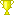

Kirjaudu sisään | Rekisteröidy

Kisakone
Käyttäjän zeppo12 kilpailut
SFL:n kilpailut löytyvät Disc Golf Metrixistä
Suomen frisbeegolfliiton kilpailujärjestelmä on siirtynyt Disc Golf Metrixiin. Lisätietoa linkistä: Suomisport, Metrix ja Kisakone UKK - Usein Kysytyt Kysymykset
Liiton kilpailut Metrixissä lyhytosoitteella: https://sfl.discgolfmetrix.com/
Käyttäjän zeppo12 kilpailut - 87
| Nimi | Paikka | Taso | Luokat | Aika | ||
|---|---|---|---|---|---|---|
| May and no hay yet | Talin Frisbeegolfpuisto | Helsinki | A-taso | MPO FPO MP40 MP50 MJ1 MJ2 | 22. - 23.05.2010 |  Tulokset 7. sija | |
| VMP-Open | Vihti, Frisbeegolfkenttä Kaatis | B-taso | MPO FPO MA1 | 12.06.2010 | Tulokset 8. sija | |
| Sportia Open | Hanko | Erilliskilpailu | MPO FPO MP40 MA1 MJ1 | 01.07.2010 | Tulokset 1. sija | |
| Ekenäs Energi Open 2010, Winner takes it All, SUOMI CUP | Tammisaari | A-taso | MPO FPO MP40 MP50 MJ1 MJ2 | 30.07.2010 - 01.08.2010 | Tulokset 8. sija | |
| SM kisat 2010 | Turku | A-taso | MPO FPO MP40 MP50 MJ1 MJ2 | 05. - 08.08.2010 | Tulokset 15. sija | |
| Pekan Leipä Open | Heinola | B-taso | MPO FPO MA1 | 18.09.2010 | Tulokset 13. sija | |
| Tammisaaren B kisa | Tammisaari | B-taso | MPO FPO MP40 MA1 | 16.10.2010 | Tulokset 14. sija | |
| Sportia Open | Hanko | Erilliskilpailu | MPO FPO MP40 MA1 MJ1 | 14.05.2011 | Tulokset 22. sija | |
| Frisbeepoint-tour Ekenäs Energi Open 2011 -osakilpailu | Tammisaari | Frisbeepoint-tour | MP40 MA1 MJ1 | 05. - 07.08.2011 | Tulokset 11. sija | |
| Frisbeegolf SM 2011 | Oulu, Toppila | Erilliskilpailu | MPO FPO MP40 MP50 MJ1 MJ2 | 26. - 28.08.2011 | Tulokset 6. sija | |
| Nummelan Syysmyrsky | Nummela | Erilliskilpailu | MPO FPO MP40 MA1 | 24.09.2011 | Tulokset 20. sija | |
| Elmo Sport: Karis Open 2011 | Karjaan frisbeegolfrata | Erilliskilpailu | MPO FPO MA2 | 08.10.2011 | Tulokset 18. sija | |
| Women's Global Event Prodiscus Challenge Julkujärvellä | Julkujärvi DGP, Ylöjärvi | Erilliskilpailu | MPO FPO MP40 MA1 MJ1 | 12.05.2012 | Tulokset 5. sija | |
| Finnish Masters | Vihti | Erilliskilpailu | MP40 MP50 MP60 MP70 FP40 FP60 | 16. - 17.06.2012 | Tulokset 2. sija | |
| Elmo Sport: Raaseporin Helmi 2012 | Raasepori | Erilliskilpailu | MPO FPO MP40 MA2 | 07.07.2012 | Tulokset 5. sija | |
| Ekenäs Energi Open 2012 Pro-tour | Tammisaari | Pro-tour | MPO FPO MP40 MP50 | 14. - 15.07.2012 | Tulokset 3. sija | |
| SM 2012 | Nokian keskusurheilupuisto | SM | MPO FPO MP40 MP50 MP60 FP40 FP60 MJ1 MJ2 | 26. - 29.07.2012 | Tulokset 9. sija | |
| Perämeri Open II (SM-karsinta) | Meri-Toppila, Oulu | Erilliskilpailu | MPO FPO MP40 MP50 MA1 MJ1 | 19.05.2013 | Tulokset 5. sija | |
| Parigolf SM-kilpailu Avoin | Tali ja Kivikko | SM | MPO FPO MP40 MJ1 MJ2 | 25. - 26.05.2013 | Tulokset | |
| VMP-open etutiit | Vihti, Kaatis | Erilliskilpailu | FPO MP40 MA1 MA3 | 02.06.2013 | Tulokset 12. sija | |
| Finnish Masters | Peurunka DGP, Laukaa | Erilliskilpailu | MP40 MP50 MP60 MP70 FP40 FP60 | 15. - 16.06.2013 | Tulokset 4. sija | |
| European Open - The Qualifier | Nokian keskusurheilupuisto | Erilliskilpailu | MPO | 06.07.2013 | Tulokset 42. sija | |
| Fierce Pro Tour Lauste | Turku | Pro-tour | MPO FPO MP40 MP50 | 03. - 04.08.2013 | Tulokset 4. sija | |
| SM 2013 | Tammisaari | SM | MPO FPO MP40 MP50 MP60 FP40 MJ1 MJ2 | 15. - 18.08.2013 | Tulokset 8. sija | |
| K.O. 2013 - Keinukallio Open | Keinukallio, Kerava | Erilliskilpailu | MPO FPO MP40 MA2 | 24.08.2013 | Tulokset 3. sija | |
| EIF Discgolf 10v juhlakisa | Tammisaari | Erilliskilpailu | MPO FPO MP40 MA2 | 14.09.2013 | Tulokset 14. sija | |
| Kivikon Tyyni 2013 | Kivikko | Erilliskilpailu | FPO MP40 MA2 MA3 | 15.09.2013 | Tulokset 7. sija | |
| Spring Masters Keinukallio | Kerava | Erilliskilpailu | MP40 MP50 MP60 FP40 | 04.05.2014 | Tulokset 4. sija | |
| NBDG pro-tour Pori | Porin Kirjurinluoto | Pro-tour | MPO FPO MP40 MP50 MP60 FP40 | 10. - 11.05.2014 | Tulokset 5. sija | |
| Frisbeepoint Players Cup | Talin Frisbeegolfpuisto | Helsinki | Erilliskilpailu | MPO | 31.05.2014 - 01.06.2014 | Tulokset 1. sija | |
| Karkkila Open | Karkkila | Erilliskilpailu | MPO FPO MP40 MP50 FP40 | 08.06.2014 | Tulokset 6. sija | |
| Finnish Masters | Turku, Lausteen Frisbeegolfpuisto | Erilliskilpailu | MP40 MP50 MP60 MP70 FP40 FP50 FP60 | 14. - 15.06.2014 | Tulokset 9. sija | |
| Prodiscus Mukkula | Lahti | Erilliskilpailu | MP40 MP50 MA1 | 05.07.2014 | Tulokset 5. sija | |
| Normitali-liiga I | Tali | PDGA-liiga | MPO FPO | 31.08.2014 | Tulokset 28. sija | |
| Frisbeegolf SM | Meri-Toppila DiscGolfPark, Oulu | SM | MPO FPO MP40 MP50 MP60 FP40 | 04. - 07.09.2014 | Tulokset 17. sija | |
| Nokia Prodiscus Open Pro | Nokian keskusurheilupuisto | Erilliskilpailu | MPO FPO MP40 MP50 | 21.09.2014 | Tulokset 7. sija | |
| Ta3.32 - Tonttu Open | Talin Frisbeegolfpuisto | Helsinki | Erilliskilpailu | MPO FPO MP40 | 20.12.2014 | Tulokset 9. sija | |
| TA3.33 Loska Open | Kivikko | Erilliskilpailu | MPO FPO MP40 | 17.01.2015 | Tulokset 19. sija | |
| TA3.34 - Back to 80's | Meilahti | Erilliskilpailu | MPO FPO MP40 | 14.02.2015 | Tulokset 15. sija | |
| TA3.35 - Tali Talvella | Tali | Erilliskilpailu | MPO FPO MP40 | 14.03.2015 | Tulokset 20. sija | |
| TA3.36. - Long Haul | Hyvinkää - Nummenmäki | Erilliskilpailu | MPO FPO MP40 | 18.04.2015 | Tulokset 14. sija | |
| Legacy Discs Open 2015 | Helsinki, Kivikko | Erilliskilpailu | MPO FPO MP40 MP50 MP60 | 19.04.2015 | Tulokset 3. sija | |
| Spring Masters 2015 | Keinukallio, Kerava | Erilliskilpailu | MP40 MP50 MP60 FP40 | 03.05.2015 | Tulokset 4. sija | |
| Grip EQ -tour Kirjuri | Porin Kirjurinluoto | Pro-tour | MPO FPO MP40 MP50 MP60 FP40 | 16. - 17.05.2015 | Tulokset 3. sija | |
| Normitali-liiga VII | Helsinki, Tali | PDGA-liiga | MPO FPO | 31.05.2015 | Tulokset 28. sija | |
| Grip EQ -tour Kaatis | Vihti, Kaatis | Pro-tour | MPO FPO MP40 MP50 MP60 FP40 | 06. - 07.06.2015 | Tulokset 4. sija | |
| Masteri - Finnish Masters 2015 | Peurunka | Erilliskilpailu | MP40 MP50 MP60 MP70 FP40 FP50 FP60 FP70 | 13. - 14.06.2015 | Tulokset 12. sija | |
| Karkkilan KesäKinkerit | Karkkila | Erilliskilpailu | MPO FPO MP40 | 27.06.2015 | Tulokset 22. sija | |
| Grip EQ -tour Lauste | Turku, Lausteen Frisbeegolfpuisto | Pro-tour | MPO FPO MP40 MP50 MP60 FP40 | 04. - 05.07.2015 | Tulokset 4. sija | |
| Hyvinkään Heinäpaali | Hyvinkää | Erilliskilpailu | MPO FPO MP40 MA2 MJ2 FJ1 | 11. - 12.07.2015 | Tulokset 11. sija | |
| Normitali-liiga XIII | Helsinki, Tali | PDGA-liiga | MPO FPO | 19.07.2015 | Tulokset 16. sija | |
| Syysmyrsky Pro 2015 | Nummelanharjun Frisbeegolfrata | Erilliskilpailu | MPO FPO MP40 MP50 FP40 | 26.09.2015 | Tulokset 8. sija | |
| Ruska Masters | Hyvinkää | Erilliskilpailu | MP40 MP50 MP60 FP40 FP50 | 10.10.2015 | Tulokset 4. sija | |
| Veikkola Kevätrieha | Veikkola | Erilliskilpailu | MPO FPO MP40 MP50 MA2 MA4 FA1 MJ18 | 26. - 27.03.2016 | Tulokset 2. sija | |
| Sappee season opener | Sappee, Pälkäne | Erilliskilpailu | MPO FPO MP40 MA2 MA3 MJ15 | 03.04.2016 | Tulokset 8. sija | |
| Startti 2016 PRO sponsored by Vaunula | Hyvinkää, Nummenmäki | Erilliskilpailu | MPO FPO MP40 | 09.04.2016 | Tulokset 24. sija | |
| Spring Masters 2016 | Vihti, Kaatis | Erilliskilpailu | MP40 MP50 MP60 MP70 FP40 | 15.05.2016 | Tulokset 6. sija | |
| Grip EQ -tour 2016 Tammisaari | Tammisaari | Pro-tour | MPO FPO MP40 MP50 MP60 FP40 | 21. - 22.05.2016 | Tulokset 9. sija | |
| Julkujärven kesäkolli PRO | Julkujärvi DGP, Ylöjärvi | Erilliskilpailu | MPO FPO MP40 | 11.06.2016 | Maksettu | |
| Frisbeegolf SM 2016 | Turku, Lausteen Frisbeegolfpuisto | SM | MPO FPO MP40 MP50 MP60 FP40 | 30.06.2016 - 03.07.2016 | Tulokset 14. sija | |
| Hyvinkään Heinäpaali sponsored by Vaunula | Hyvinkää | Erilliskilpailu | MPO FPO MP40 MA2 MA3 MJ18 | 09. - 10.07.2016 | Tulokset 14. sija | |
| OmaSp-Open PRO | Kylmäkoski DGP, Akaa | Erilliskilpailu | MPO FPO MP40 MP50 | 28.08.2016 | Tulokset 5. sija | |
| Veikkolan Arki-ilta | Veikkola | Erilliskilpailu | MPO FPO MP40 MP50 MA3 | 31.08.2016 - 01.09.2016 | Tulokset 1. sija | |
| Grip EQ -tour 2016 Kankaanpää | Viidentienristeys Kankaanpää | Pro-tour | MPO FPO MP40 MP50 MP60 FP40 | 17. - 18.09.2016 | Tulokset 9. sija | |
| Ruska Masters 2016 sponsored by Vaunula | Hyvinkää, Sahanmäki | Erilliskilpailu | MP40 MP50 MP60 FP40 FP50 MA40 FA40 | 02.10.2016 | Tulokset 2. sija | |
| K.O. 2016 | Keinukallio, Kerava | Erilliskilpailu | MPO FPO | 22. - 23.10.2016 | Tulokset 17. sija | |
| Startti Masters | Hyvinkää, Sahanmäki | Erilliskilpailu | MP40 MP50 MP60 MP70 FP40 FP50 | 16.04.2017 | Tulokset 14. sija | |
| Spring Masters Kaatis | Vihti | Erilliskilpailu | MP40 MP50 MP60 MP70 FP40 FP50 | 23.04.2017 | Tulokset 1. sija | |
| Spring Masters Keinukallio | Kerava | Erilliskilpailu | MP40 MP50 MP60 MP70 FP40 FP50 | 30.04.2017 | Maksettu | |
| Powergrip Pro Tour - Jyväskylä | Jyväskylä, Keljonkangas | Pro-tour | MPO FPO MP40 MP50 MP60 FP40 | 06. - 07.05.2017 | Tulokset 13. sija | |
| Oittaan Kevätliiga 2/6 | Espoo, Oittaan Frisbeegolfrata | PDGA-liiga | MPO FPO MJ18 | 14.05.2017 | Tulokset 2. sija | |
| Oittaan Kevätliiga 4/6 | Espoo, Oittaan Frisbeegolfrata | PDGA-liiga | MPO FPO MJ18 | 28.05.2017 | Tulokset 25. sija | |
| Hiidenvesi Open 2017 | Nummela / Vihti | Erilliskilpailu | MPO FPO MP40 MP50 MP60 FP40 FP50 | 03. - 04.06.2017 | Tulokset 16. sija | |
| Mukkula Open Sponsored by Westside Discs | Lahti | Erilliskilpailu | MPO FPO MP40 MP50 MP60 FP40 MA2 FA1 MJ15 | 10. - 11.06.2017 | Tulokset 7. sija | |
| Powergrip Pro Tour - Tammisaari | Tammisaari, Västerby | Pro-tour | MPO FPO MP40 MP50 MP60 FP40 | 01. - 02.07.2017 | Tulokset 12. sija | |
| Oma SP Open PRO | Kylmäkoski DGP, Akaa | Erilliskilpailu | MPO FPO MP40 MP50 | 09.07.2017 | Tulokset 12. sija | |
| Hyvinkään Heinäpaali | Hyvinkää | Erilliskilpailu | MPO FPO MP40 MP60 MA2 MA4 FA2 FA4 MJ15 | 15. - 16.07.2017 | Tulokset 28. sija | |
| Raaseporin Helmi | Karjaa, Raasepori | Erilliskilpailu | MPO FPO MP40 FP40 MA3 MJ18 | 05. - 06.08.2017 | Tulokset 16. sija | |
| Powergrip Pro Tour - Pori | Porin Kirjurinluoto | Pro-tour | MPO FPO MP40 MP50 MP60 FP40 | 12. - 13.08.2017 | Tulokset 13. sija | |
| Frisbeegolf SM 2017 | Hyvinkää, Nummenmäki | SM | MPO FPO MP40 MP50 MP60 FP40 | 17. - 20.08.2017 | Tulokset 18. sija | |
| Wauhtipyörä Open 2017 | Mikkeli | Erilliskilpailu | MPO FPO MP40 MP50 | 02. - 03.09.2017 | Tulokset 18. sija | |
| Helsinki Open PRO | Helsinki, Tali ja Kivikko | Erilliskilpailu | MPO FPO MP40 FP40 | 09.09.2017 | Tulokset 20. sija | |
| Majakka Open | Hanko | Erilliskilpailu | MPO FPO MP40 MA1 MJ18 | 16.09.2017 | Tulokset 13. sija | |
| Syysmyrsky Pro | Vihti, Frisbeegolfkenttä Kaatis | Erilliskilpailu | MPO FPO MP40 MP50 FP40 | 01.10.2017 | Tulokset 9. sija | |
| Autumn Open Veikkola | Kirkkonummi | Erilliskilpailu | MPO MA3 MA40 MA50 FA1 | 14.10.2017 | Tulokset 3. sija | |
| Veikkola End of 2017 | Veikkola | Erilliskilpailu | MP40 MP50 FP40 MA1 MA3 FA1 | 30. - 31.12.2017 | Tulokset 1. sija | |
| Veikkola Spring Amateurs 2018 | Veikkola | Erilliskilpailu | MA1 MA4 MA40 MA50 MA55 FA1 FA3 FA40 | 02.04.2018 | Tulokset 6. sija |